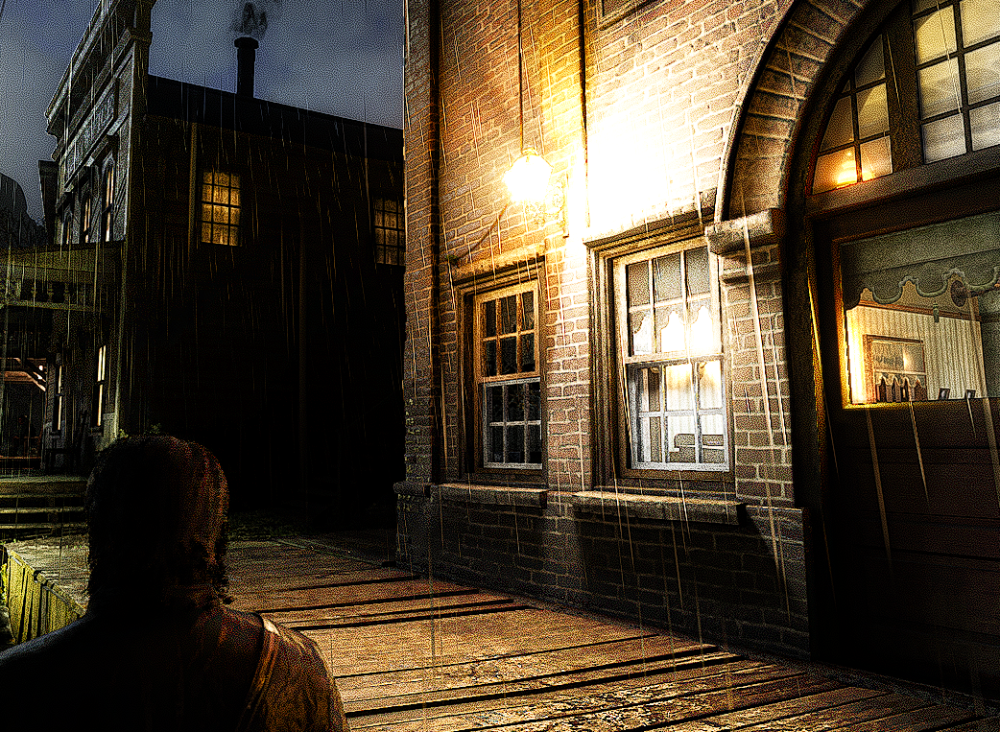

And how you can install RTGI
 RTGI is a Reshade effect, that uses your games depth buffer data to simulate how light behavior may work in real life, it makes use of
complex computer graphics techniques to provide amazing visuals in the domain of post processing effects.
Due to the nature of post processing, RTGI is screen spaced, meaning it cant render on what's not on the depth buffer.